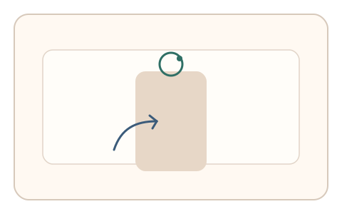
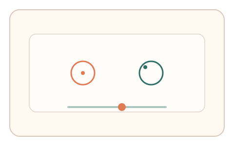
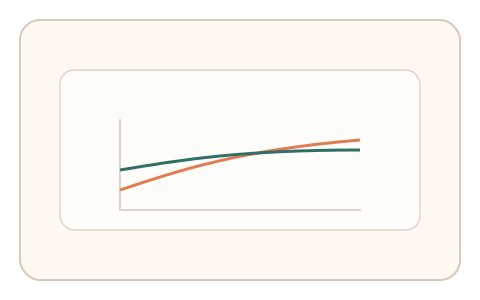

#143
F：意图/现实耦合 × 异步/随机插入（路径/预测误差）
已扩展
姿态相位同步
设备姿态驱动目标相位，用户同步操作并记录相位滞后与适应曲线进行判定。
概念原文
在 App 中利用设备姿态驱动目标相位，用户需同步操作，系统记录适应曲线并做设备基线比对。
将在场姿态作为动态锚点。
研究背景
姿态与操作同步依赖感觉‑运动协调与适应过程，真实用户会表现出稳定的相位滞后与渐进校准。将姿态相位作为动态锚点，可检测在场性与适应曲线。
核心机制
- 设备姿态驱动目标相位或指示节奏。
- 用户通过点击/拖拽同步相位。
- 记录相位误差与校准过程。
- 与设备基线和人类分布比对。
用户流程
- 步骤 1：用户进入姿态驱动的同步任务。
- 步骤 2：根据相位提示进行同步操作。
- 步骤 3：系统记录相位误差与适应曲线。
判定信号
相位滞后/超前量
人类同步通常存在稳定的相位滞后。
适应曲线斜率与回拉
真实用户会逐步校准而非瞬时对齐。
判定逻辑
相位误差与适应曲线需落在人类基线区间；过度恒定或无适应判异常。
对抗面
- 传感器伪造姿态并生成固定相位
- 脚本直接同步相位并回放
防御与缓解
- 随机化相位偏移与漂移
- 融合加速度/陀螺一致性检查
- 加入微扰与多段对照
可达性与风险
提供触控滑杆或按钮节拍替代，不强制使用姿态传感器。
- 传感器噪声导致误差偏大
- 权限受限导致不可用
可视化状态

状态 1：姿态驱动
姿态变化驱动相位指示。

状态 2：同步操作
用户操作与相位对齐。

状态 3：适应曲线
记录相位误差与适应曲线。
参考资料
Sensorimotor synchronization
说明相位同步与滞后特征。
Inertial measurement unit
说明姿态与运动传感器基础。